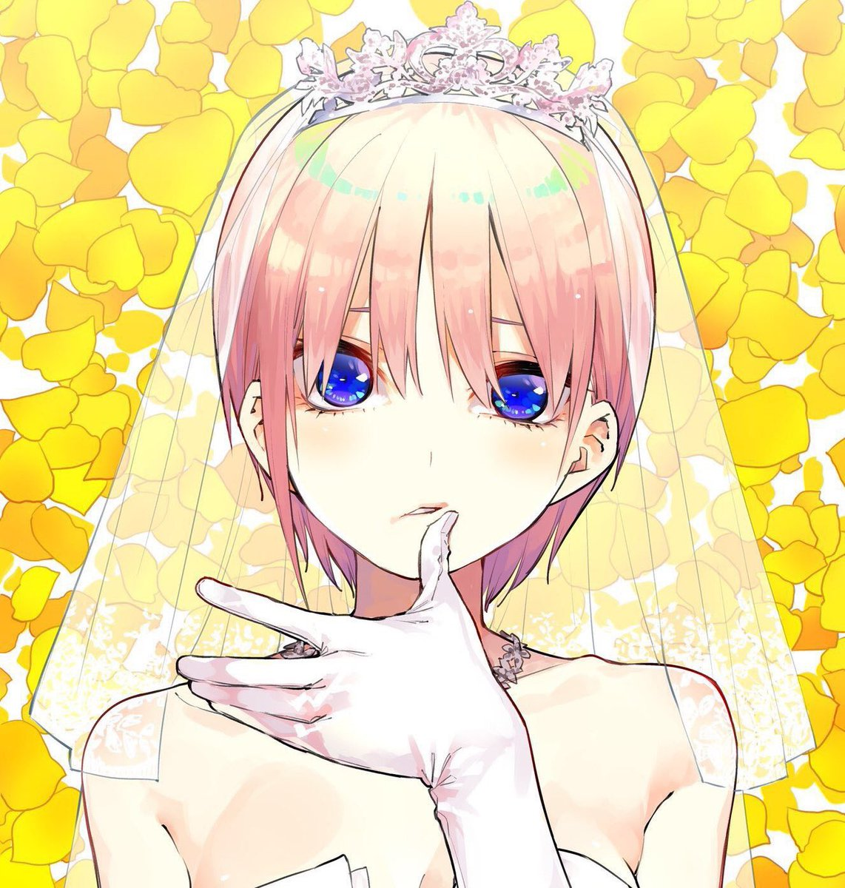
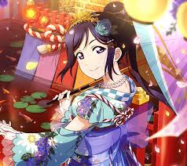
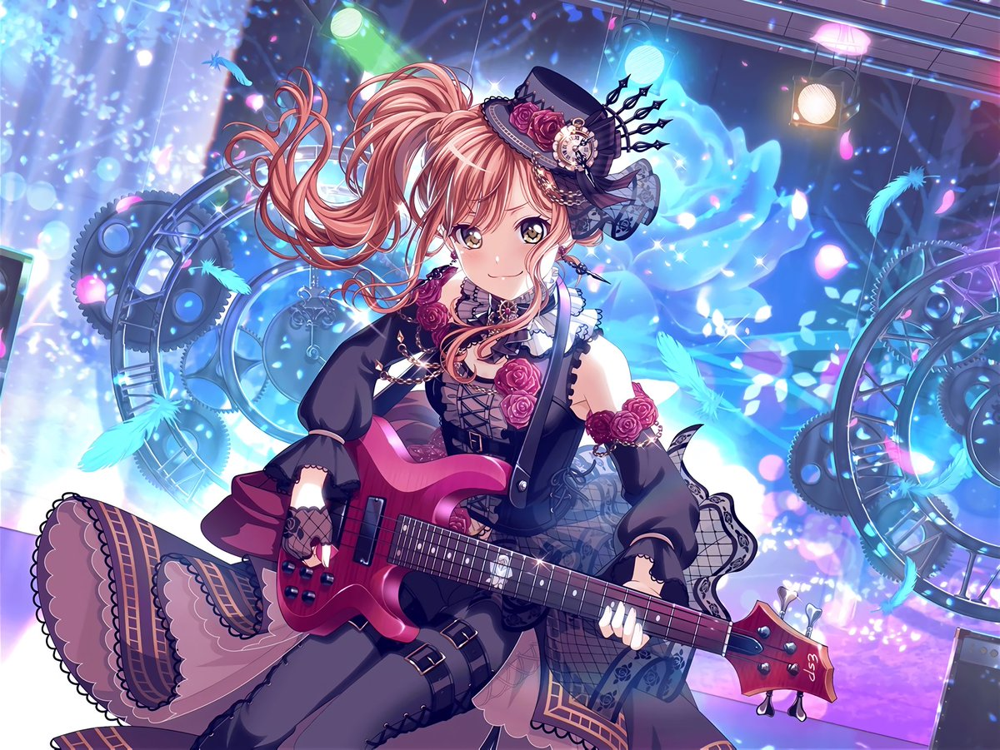

個人的に好きなアニメキャラをピックアップして簡単に紹介します。
ライトノベル、漫画、アニメ「ソードアート・オンライン」でのメインヒロイン。外伝では主人公を務める。[SAO開始～クリア]15歳→17歳。[誕生日]9月30日。東京都世田谷区宮坂在住。実は社長令嬢という身分。SAOでの二つ名は《閃光》。ALOではバーサクヒーラーと呼ばれることもある。主人公（キリト『Kirito』/桐ヶ谷 和人『きりがや かずと』）とは恋人関係。
使用武器は細剣で『ランベントライト』という細剣を使用している。

漫画、アニメ「五等分の花嫁」の五姉妹の長女。アシンメトリー調のショートヘアと右耳に填めたピアスが特徴。からかい上手の小悪魔的な性格だが、面倒見のよいお姉さん気質。［誕生日］5月5日［身長］159cm［イメージカラー］黄［好きな食べ物］塩辛［嫌いな食べ物］しいたけ［好きな動物］カバ［よく見るテレビ］ドラマ ［得意科目］数学。

「ラブライブ!サンシャイン!!」に登場するキャラクター。[学年]高校3年生[誕生日]2月10日[星座]水瓶座［ライブカラー］エメラルドグリーン[血液型]O型[身長]162cm[趣味]天体観測・水泳[特技]ダイビング・操船[好きな食べ物]さざえ・わかめ[嫌いな食べ物]梅干。口癖は「ハグしよ？」でイベントで用いるコール＆レスポンスにも使われている。大人っぽくサバサバした性格であり、落ち着いていてどこかクールな雰囲気を纏っている反面、あまり物事にこだわりがない。ダイビングで体力が養われているためAqoursの中で一番スタミナがあり、泳力と筋肉が自慢。

スマホゲーム「バンドリ！ガールズバンドパーティー！(ガルパ)」、「BanG Dream!」に登場するキャラクター。所属バンド『Roselia』でベースを担当している高校3年生。[誕生日]8月25日[星座]乙女座[血液型]O型[身長]158cm[好きなもの]筑前煮・酢の物[嫌いなもの]グリーンスムージー[趣味]編み物。ダンス部所属で音楽からは離れていたが、幼馴染であり親友でもある友希那がバンドを組むと聞き、「そばにいて、友希那の笑顔をもう一度見たい」と思いバンドに加わる。しっかり者で責任感が強い一面を持っている。また、常にメンバーに気を配るような優しさを持っており、Roseliaの精神的な支柱になっている。社交的で情に厚く明るい性格で、面倒見がいい。おしゃれに詳しく、友達も多い。